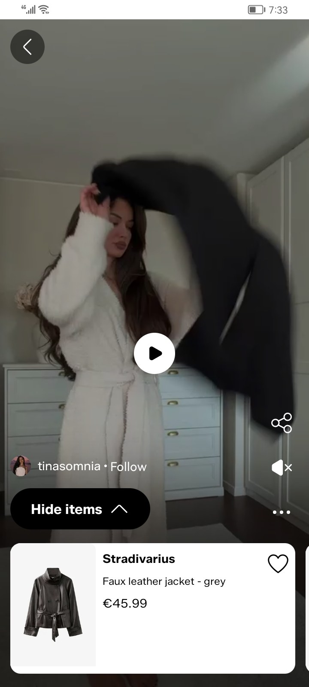
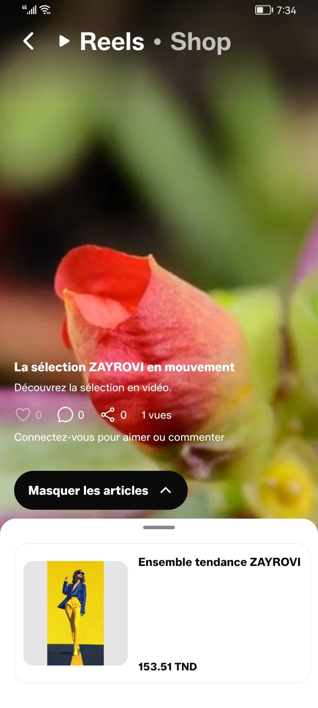
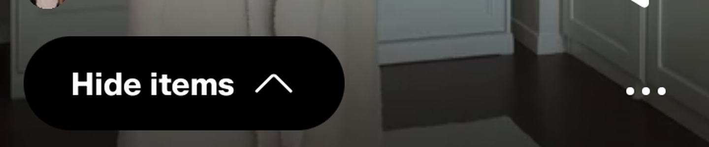
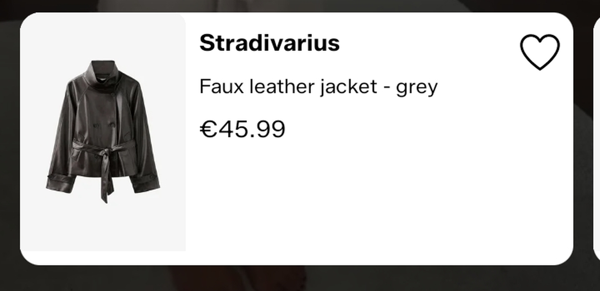
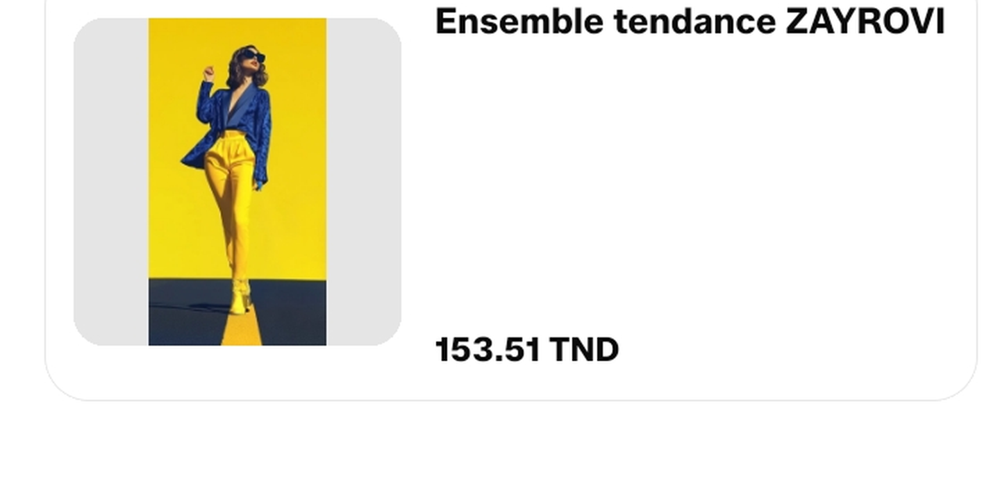

مقارنة بين صورتين لنفس الشاشة: المرجع (TikTok Shop، حساب tinasomnia — التيري محلول) وعندنا (تطبيق ZAYROVI التجريبي، 24/10 الساعة 19:34). القياسات محسوبة على 720×1600 بكثافة 2 بكسل/نقطة ⇒ كل رقم تحت بالنقاط (dp).



أسود · 160×52 · نصف قطر كامل · 16 من الحاشية
أسود · 196×44 · نصف قطر كامل · 16 من الحاشية

الماركة 17/700 ← العنوان 15/400 ← السعر 15/700، فارق 6 بينهم. الصورة 99×141 ملتصقة بالحدّ الأيسر على خلفية #F6F6F6. القلب 28 فوق يمين.

عنوان 15/700 فوق ← فراغ ≈ 80 ← سعر 14/700 تحت. الصورة 118×118 مربّعة داخلة 10 على خلفية #E5E5E5. بلا ماركة، بلا قلب.
| # | العنصر | المرجع | عندنا | الحكم | الإصلاح المقترح |
|---|---|---|---|---|---|
| 1 | الزرّ في الحالة المسكّرة | أبيض، نصّ أسود، سهم لتحت | أسود، نصّ أبيض | خطأ | أبيض كي يكون مسكّر (أوضح فوق الفيديو)، أسود كي يكون محلول |
| 2 | ارتفاع الزرّ | 52 | 44 | خطأ | pillHeight 44 → 52 |
| 3 | نصّ الزرّ | كلمتين: «Hide items» | 3 كلمات: «Masquer les articles» | قرار | «Masquer» / «Voir les articles» — الزرّ يولّي 160 موش 196 |
| 4 | الفارق بين الزرّ والبطاقة | 67 | 107 | خطأ | نقصّ الفارق: البطاقة تصعد أكثر |
| 5 | مقبض السحب | ما فمّاش | موجود 36×4 | قرار | نتخلّصو منّو، ولا نخلّيوه ونعترفو بيه كفارق |
| 6 | عرض البطاقة | 331 (حاشية 12) | 336 (حاشية 16، 22 كشف) | قرار | حاشية 12 وكشف أكبر للبطاقة اللي بعدها |
| 7 | ارتفاع البطاقة | 151 | 133 (والكود يقول 158) | خطأ | نوحّدو: 151 في الثلاثة (RN + CSS + الموكاب) |
| 8 | منطقة الصورة | 99×141 بكامل الارتفاع، ملتصقة بالحدّ، خلفية #F6F6F6 | 118×118 مربّعة داخلة 10، خلفية #E5E5E5 | خطأ | الصورة تاخذ كامل ارتفاع البطاقة على اليسار |
| 9 | الماركة | «Stradivarius» 17/700 | ما فمّاش — الحقل ما يوصلش من الخادم | خطأ | نزيدو brand في publicLinkedProduct + الكارطة |
| 10 | العنوان | 15/400 تحت الماركة | 15/700 فوق (هو العنوان الرئيسي) | خطأ | الوزن 400 والحجم 13–15، الترتيب: ماركة ← عنوان ← سعر |
| 11 | موضع السعر | تحت العنوان بـ6 | ملزوق تحت البطاقة، فراغ ≈80 في الوسط | خطأ | نحيّد justifyContent:'space-between' ونستعمل gap:3 |
| 12 | القلب | موجود 28 فوق يمين | ما فمّاش (ما بعثناش onToggleFavorite) | خطأ | نربطو بالمفضّلة (نفس الـAPI تاع catalogue) |
| 13 | الحدود والزاوية | بلا حدود · نصف قطر ≈18 · ظل خفيف | حدّ #E5E5E5 · نصف قطر 16 | قرار | نصف قطر 18 وبلا حدود |
| 14 | كروم الشاشة | زر رجوع دائري · أفاتار + اسم + Follow · شريط أيمن (مشاركة/كتم/…) | هيدر «Reels · Shop» · عنوان ووصف وعدّادات · «سجّل للتفاعل» | قرار | شاشة مختلفة: إمّا نقربو للـpattern، وإمّا نخلّيو المحتوى تاعنا |
publicLinkedProduct() في src/services/shoppableContent.ts ما يبعثش brand ⇒ حتى كان الكارطة عندها البلاصة، ما فمّاش شنوّة يتكتب.styles.body في apps/mobile/src/features/shopping/LinkedProductCard.tsx فيه justifyContent:'space-between' على ارتفاع 158 ⇒ العنوان فوق والسعر تحت والفراغ في الوسط.ReelShopTray ما يعطيش onToggleFavorite ⇒ القلب ما يترسمش (وهذا مقصود في الكود: «بلا معالج = بلا قلب»).ملاحظة صريحة: في الجواب اللي قبل قلت «الـAPK قديم» — هذا صحيح في جزء (القياسات 336×118 وحدها راكبة)، لكن موش هو سبب المشكل: البطاقة اللي في الصورة راهي تجري الكود الجديد، والخطأ في جوّة البطاقة (الماركة/الترتيب/القلب) وفي ارتفاع الزرّ.
في الحالتين: ما فمّاش حاجة تتصلّح في السيرفر خارج حقل brand — الربط متعدّد المنتوجات
(lot F1) والورقة الكبيرة (images/variants/stock) راهم منفّذين ومختبَرين.